TWPANEL
Twitter Panel Programı
Hesap ekleme, proxy, profil düzenleme, beğeni, yorum, zamanlanmış tweet ve takip işlemlerini tek ekrandan yönetmek için hazırlanmış, ekran görüntülü ve numaralı anlatım.
Başlamadan Önce
Programı ilk kez açmadan önce aşağıdaki üç şeyin hazır olduğundan emin olun.
Google Chrome
Bilgisayarınızda yüklü olmalı. Yolu Sistem Ayarları sayfasındaki Chrome Exe Tam Yolu alanından değiştirebilirsiniz.
ChromeDriver
Alanı boş bırakırsanız program klasöründeki chromedriver.exe kullanılır; yoksa otomatik indirilir.
Lisans
Program lisanslıdır. Başlangıç, bitiş tarihi ve kalan gün sayısı lisans bölümünde görünür. Süre dolarsa işlemler çalışmaz.
Kullanıcı:Şifre:Token biçiminde eklenir. Token (çerez) ile giriş yapıldığı için şifre doğru olsa bile token geçersizse giriş olmaz.Arayüze Genel Bakış
Her sayfada sabit duran üç alan vardır: üst çubuk, sol menü ve alt kontrol çubuğu.
Üst çubuk
Sağ üst köşede durum etiketi Hazır / Çalışıyor olarak görünür. Yanında Çalışma süresi ve Bekleme geri sayımı yer alır; program bekleme modundayken kaç saniye kaldığını buradan izlersiniz.
Sol menü
Tüm sayfalar buradadır. Seçili sayfa mavi yanar. Menünün altındaki Görünüm Teması kutusundan Dark / Light tema seçebilirsiniz.
Alt kontrol çubuğu
Duraklat çalışan işlemi bekletir, Durdur (Chrome'ları Kapat) işlemi bitirip açık Chrome pencerelerini kapatır.
Genel Bakış
Sistem Durum Paneli & Canlı Takip. Tüm hesap, proje ve havuz özeti ile çalışan işlemin anlık durumu burada görünür.
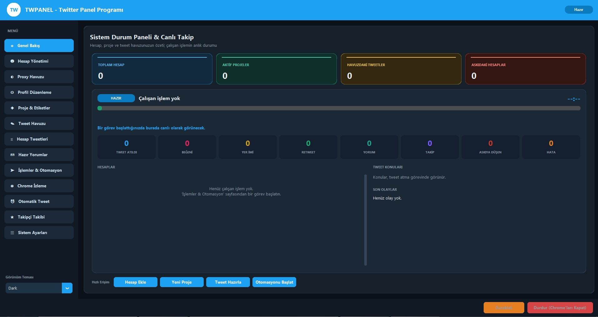
1234567- Özet kartlarıToplam hesap, aktif proje, havuzdaki tweet ve askıdaki hesap sayısı.
- Durum etiketi ve ilerleme çubuğuHAZIR / ÇALIŞIYOR durumu, çalışan işlemin adı ve ilerlemesi.
- Süre göstergesiİşlemin süresi veya bekleme geri sayımı bu köşede akar (boştayken
--:--). - Canlı sayaçlarTweet atıldı, beğeni, yer imi, retweet, yorum, takip, askıya düşen ve hata sayıları.
- Hesaplarİşleme giren her hesabın durumu burada satır satır listelenir.
- Tweet konuları / Son olaylarAtılan tweet konuları ve en son olay kayıtları.
- Hızlı ErişimHesap Ekle Yeni Proje Tweet Hazırla Otomasyonu Başlat kısayolları.
Hesap Yönetimi
Hesapları ekleyin, süzün, profil bilgilerini çekin ve askı durumunu kontrol edin. Liste zebra (satır satır renkli) görünümlüdür.
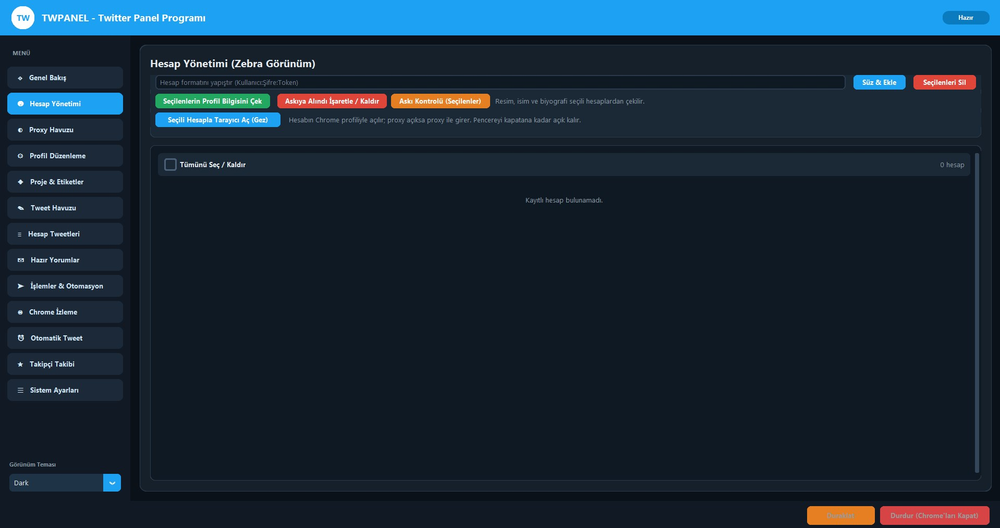
12345678- Yapıştırma kutusuHesapları
Kullanıcı:Şifre:Tokenformatında, her satıra bir hesap gelecek şekilde yapıştırın. - Süz & EkleYapıştırılan satırları denetler, hatalı ve tekrarlayanları ayıklar, geçerlileri listeye ekler.
- Seçilenleri Silİşaretli hesapları listeden kaldırır.
- Seçilenlerin Profil Bilgisini ÇekSeçili hesapların resim, isim ve biyografisini X'ten alıp listede gösterir.
- Askıya Alındı İşaretle / KaldırAskıdaki hesabı elle işaretler; işaretli hesaplar otomasyona alınmaz.
- Askı Kontrolü (Seçilenler)Seçili hesapların askıya alınıp alınmadığını kontrol eder.
- Seçili Hesapla Tarayıcı Aç (Gez)Hesabın kendi Chrome profiliyle açılır, proxy varsa proxy ile girer. Pencereyi siz kapatana kadar açık kalır.
- Tümünü Seç / KaldırTüm hesapları tek tıkla işaretler. Sağdaki sayaç toplam hesap sayısını verir.
Proxy Havuzu
Hesapların hangi IP üzerinden çıkacağını belirler. Format: IP:PORT:KULLANICI:ŞİFRE
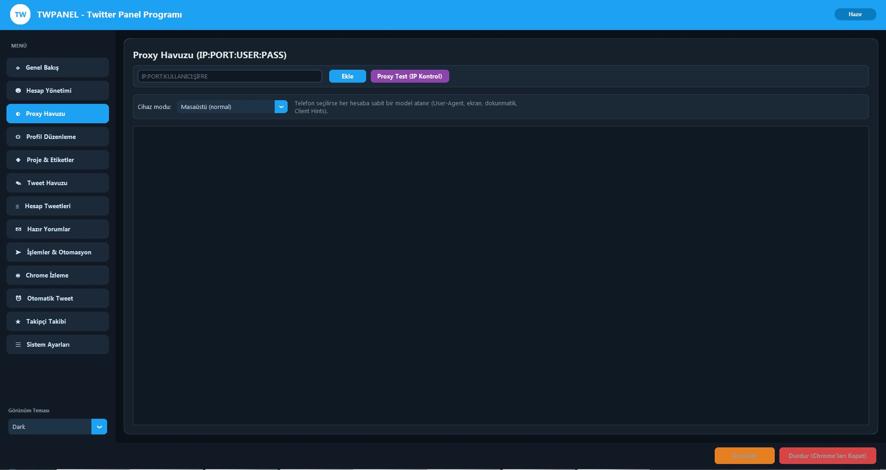
12345- Proxy giriş kutusuTek bir proxy'yi
IP:PORT:KULLANICI:ŞİFREbiçiminde yazın. - EkleProxy'yi havuza kaydeder.
- Proxy Test (IP Kontrol)Proxy'lerin çalışıp çalışmadığını ve çıkış IP'sini (şehir, ülke, sağlayıcı) kontrol eder.
- Cihaz moduMasaüstü (normal) veya Telefon. Telefon seçilirse her hesaba sabit bir model atanır (User-Agent, ekran, dokunmatik, Client Hints).
- Proxy listesiKayıtlı proxy'ler ve test sonuçları bu alanda görünür.
Profil Düzenleme
Hesapların isim, biyografi, web sitesi, profil ve kapak resmini toplu olarak veya tek tek güncelleyin.
Toplu havuz
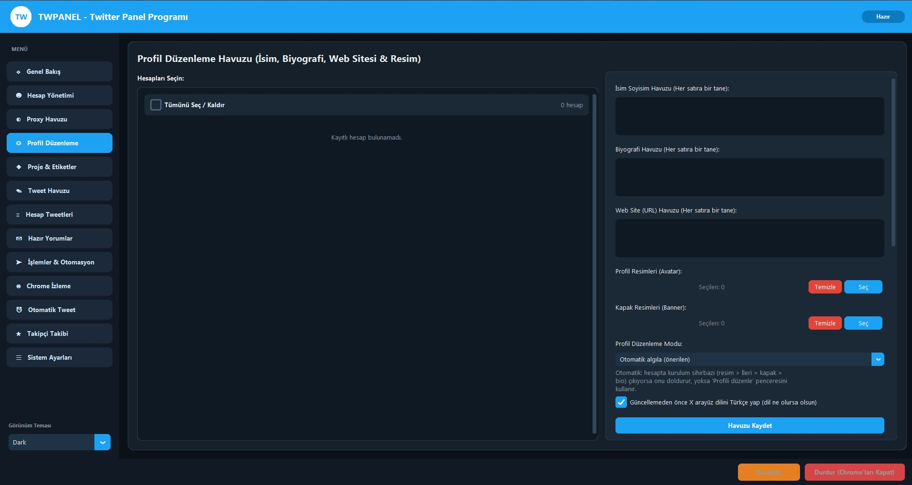
123456789- Hesap listesiGüncellenecek hesapları işaretleyin.
- İsim Soyisim HavuzuHer satıra bir isim. Hesaplara bu havuzdan dağıtılır.
- Biyografi HavuzuHer satıra bir biyografi.
- Web Site (URL) HavuzuHer satıra bir adres.
- Profil Resimleri (Avatar)Seç ile birden çok resim seçin, Temizle ile boşaltın. Seçilen sayısı yanda yazar.
- Kapak Resimleri (Banner)Profil resmi ile aynı mantıkla çalışır.
- Profil Düzenleme ModuÖnerilen Otomatik algıla: hesapta kurulum sihirbazı çıkarsa onu doldurur, çıkmazsa Profili düzenle penceresini kullanır.
- Türkçe arayüzGüncellemeden önce X arayüz dilini Türkçe yapar; böylece düğmeler her zaman aynı bulunur.
- Havuzu KaydetHavuzdaki bilgileri kaydeder. Sayfanın altındaki güncelleme düğmeleriyle işlem başlatılır.
Hesaba özel ayar
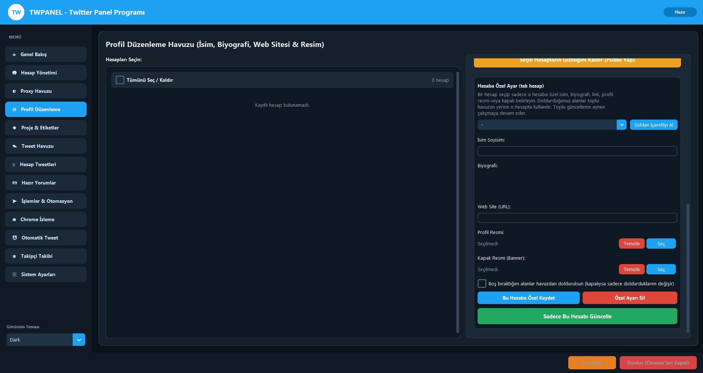
12345678910- Gizliliği Kaldır (Public Yap)Seçili hesapların gizli (korumalı) profilini herkese açık yapar.
- Hesap seçiciÖzel ayar yapılacak tek hesabı seçin.
- Soldan İşaretliyi AlSoldaki listede işaretli hesabı otomatik seçer.
- İsim SoyisimSadece bu hesap için isim.
- Biyografi / Web SiteBu hesaba özel biyografi ve bağlantı.
- Profil / Kapak resmiSadece bu hesaba uygulanacak resimler.
- Boş bıraktığım alanlar havuzdan doldurulsunAçıksa boş alanlar havuzdan gelir; kapalıysa yalnızca doldurduklarınız değişir.
- Bu Hesaba Özel KaydetAyarı bu hesap için saklar. Toplu güncellemede havuz yerine bu değerler kullanılır.
- Özel Ayarı SilHesaba özel ayarı kaldırır; hesap yeniden havuzu kullanır.
- Sadece Bu Hesabı GüncelleYalnızca bu hesabın profilini hemen günceller.
Proje & Etiketler
Hesapları bir projede toplayın. Tweet, otomasyon ve zamanlama bu projeler üzerinden çalışır.
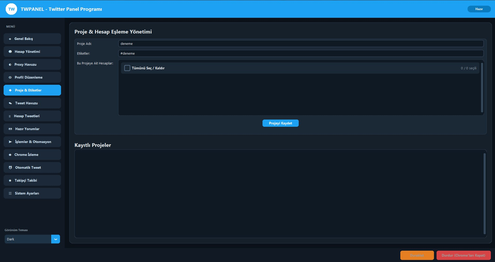
12345- Proje AdıÖrneğin
deneme. - EtiketlerProjeye bağlı hashtag'ler, örneğin
#deneme. - Bu Projeye Ait HesaplarProjede çalışacak hesapları işaretleyin. Sağda X / Y seçili sayacı vardır.
- Projeyi KaydetProjeyi oluşturur veya günceller.
- Kayıtlı ProjelerOluşturduğunuz tüm projeler listelenir.
Tweet Havuzu
Atılacak tweetleri hazırlayın. Her tweet bir projeye bağlanır ve en çok 4 resim veya 1 video içerebilir.
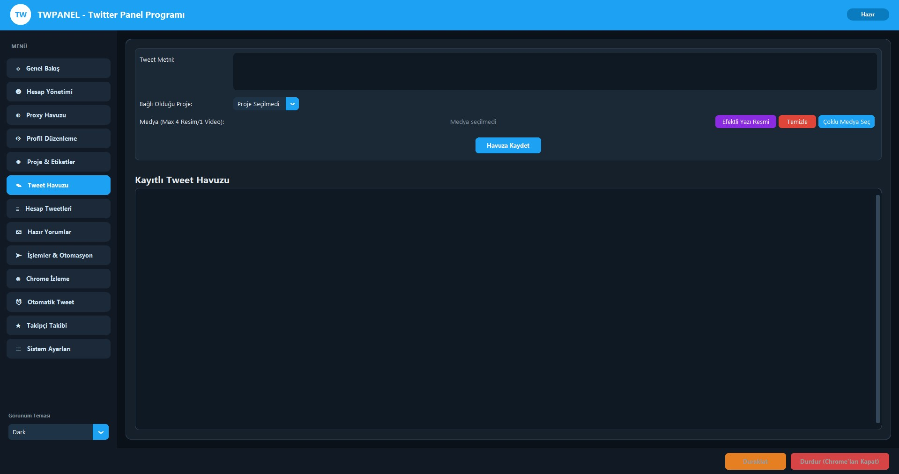
1234567- Tweet MetniPaylaşılacak yazı.
- Bağlı Olduğu ProjeTweetin hangi projede kullanılacağı.
- Efektli Yazı ResmiYazıdan süslü bir görsel üretip tweete ekler.
- TemizleSeçili medyayı kaldırır.
- Çoklu Medya SeçEn fazla 4 resim veya 1 video seçin.
- Havuza KaydetTweeti havuza ekler.
- Kayıtlı Tweet HavuzuKaydedilen tüm tweetlerin listesi.
Hesap Tweetleri
Hesapların kendi tweetlerini çekin, listeleyin ve istemediklerinizi silin.
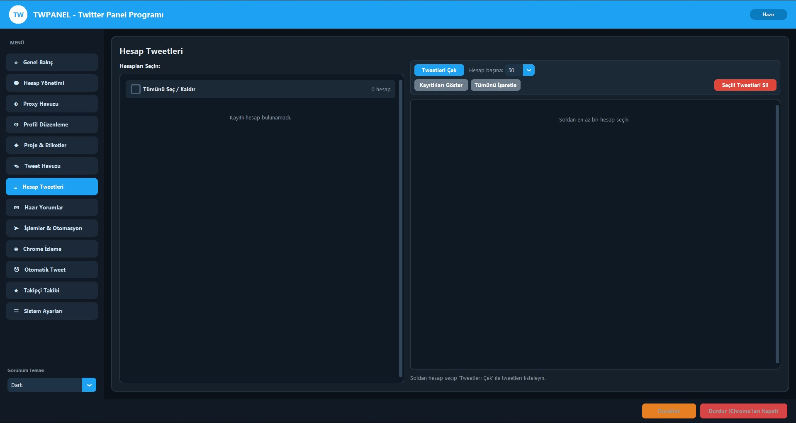
1234567- HesaplarTweetleri çekilecek hesapları seçin.
- Tweetleri ÇekSeçili hesapların tweetlerini X'ten alır.
- Hesap başınaHer hesaptan kaç tweet çekileceği (örnek: 50).
- Kayıtlıları GösterDaha önce çekilmiş tweetleri tekrar çekmeden listeler.
- Tümünü İşaretleListedeki bütün tweetleri seçer.
- Seçili Tweetleri Silİşaretli tweetleri siler.
- Tweet listesiÇekilen tweetler burada görünür.
Hazır Yorumlar
Beğeni sırasında tweetlere yazılacak yorumlar bu havuzdan rastgele seçilir.
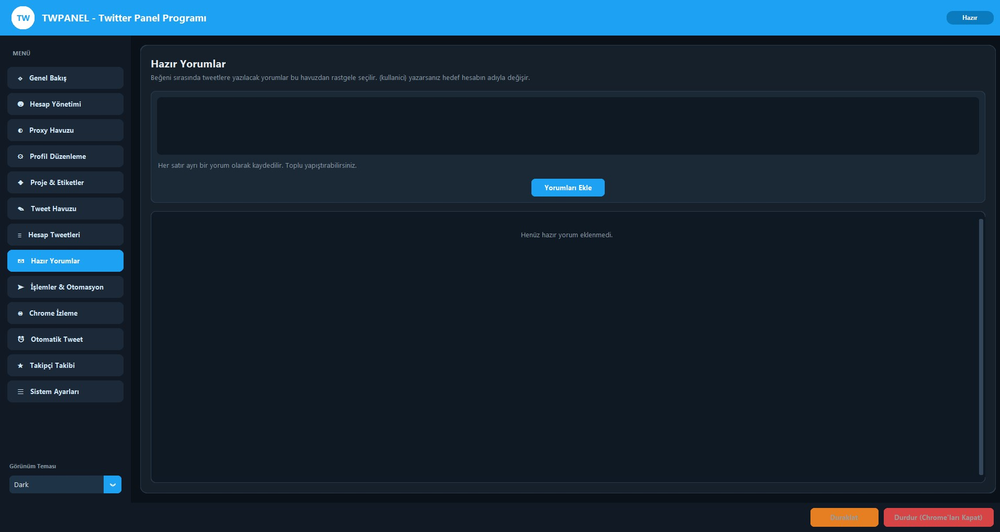
123- Yorum kutusuHer satır ayrı bir yorum olarak kaydedilir. Toplu yapıştırabilirsiniz.
- Yorumları EkleSatırları havuza ekler.
- Yorum listesiKayıtlı yorumlar. Boşsa Henüz hazır yorum eklenmedi yazar.
(kullanici) yazarsanız, yorum atılırken bu ifade hedef hesabın kullanıcı adıyla değiştirilir.İşlemler & Otomasyon
Programın kalbi. Tweet atma, karşılıklı beğeni, çapraz takip ve hashtag etkileşimi buradan başlatılır.
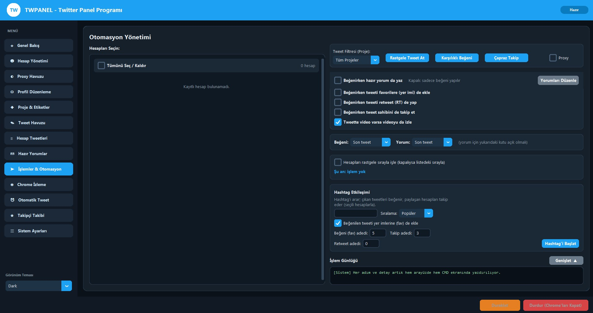
1234567891011121314- Hesapları Seçinİşleme girecek hesapları işaretleyin.
- Tweet Filtresi (Proje)Tüm Projeler veya tek proje seçin.
- Rastgele Tweet AtSeçili hesaplardan havuzdaki tweetleri rastgele atar.
- Karşılıklı BeğeniSeçili hesaplar birbirinin tweetlerini beğenir.
- Çapraz TakipSeçili hesaplar birbirini takip eder.
- Proxy kutusuİşlemi proxy ile yapar. Sistem Ayarları'nda Tüm işlemleri proxy ile yap açıksa bu kutu gizlenir.
- Beğenirken hazır yorum da yazAçıksa beğeniyle birlikte Hazır Yorumlar'dan yorum yazılır; kapalıysa sadece beğeni yapılır.
- Yorumları DüzenleHazır Yorumlar sayfasına götürür.
- Ek seçeneklerFavoriye (yer imi) ekle, retweet yap, tweet sahibini takip et, tweette video varsa izle.
- Beğeni / Yorum seçimiHangi tweetin beğenileceği ve yorum yazılacağı (örneğin Son tweet).
- Hesapları rastgele sırayla işleKapalıysa hesaplar listedeki sırayla işlenir. Altındaki satır Şu an: işlem yok gibi anlık durumu söyler.
- Hashtag EtkileşimiHashtag'i arar, çıkan tweetleri beğenir, paylaşan hesapları takip eder. Sıralama Popüler veya En yeni; beğeni, takip ve retweet adedi ayrı ayrı girilir.
- Hashtag'i BaşlatHashtag etkileşimini başlatır.
- İşlem GünlüğüHer adım hem burada hem CMD ekranında yazılır. Genişlet ile büyütebilirsiniz.
Chrome İzleme
Bir işlem başlayınca açılan Chrome'u burada canlı izleyin. Proxy ve profil bilgisi pencerenin kendisinden gelir.
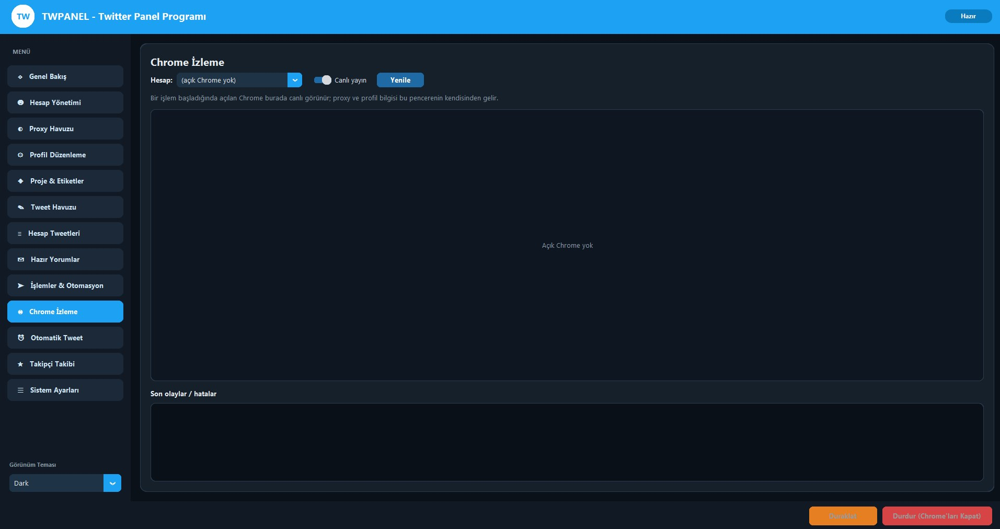
12345- Hesap seçiciİzlemek istediğiniz açık Chrome'u seçin. Açık Chrome yoksa (açık Chrome yok) yazar.
- Canlı yayınAçıkken ekran görüntüsü kendiliğinden yenilenir.
- YenileGörüntüyü elle yeniler.
- Canlı görüntüChrome'un o anki ekranı. Üstte proxy, çıkış IP'si, Chrome profil klasörü ve cihaz bilgisi görünür.
- Son olaylar / hatalarİşlem adımları saatli olarak yazılır. Giriş, gezinme, hedef profil, takip ve hata mesajları buradadır.
Otomatik Tweet (Zamanlama)
Proje danışıp tweet seçip saat belirleyin; program açıkken o saatte tweet otomatik atılır.
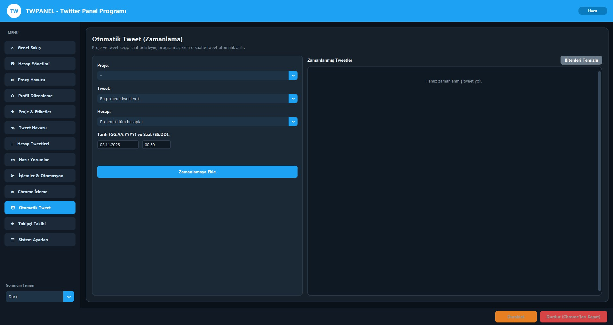
12345678- ProjeZamanlanacak tweetin projesi.
- TweetProjedeki tweetlerden biri. Projede tweet yoksa Bu projede tweet yok yazar.
- HesapProjedeki tüm hesaplar veya tek bir hesap.
- Tarih (GG.AA.YYYY)Örnek:
03.11.2026 - Saat (SS:DD)Örnek:
00:50 - Zamanlamaya EkleKaydı sağdaki listeye ekler.
- Zamanlanmış TweetlerHer satırda tarih, proje, hesap, tweet metni ve durum bulunur: Bekliyor / Tamamlandı. Bekleyen kayıtlarda kalan süre geri sayım olarak akar. Her satırın sonunda Sil düğmesi vardır.
- Bitenleri TemizleTamamlanan kayıtları listeden kaldırır.
Takipçi Takibi
Seçili hesaplar, hedef hesapların takipçi listesine girip oradaki kişileri takip eder; ya da doğrudan tek bir hedef hesabı takip eder.
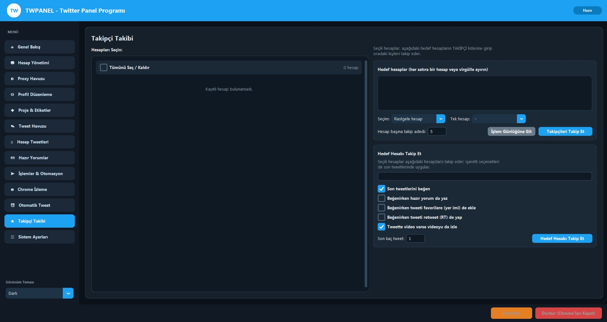
12345678910- Hesapları SeçinTakibi yapacak hesaplar.
- Hedef hesaplarHer satıra bir hesap veya virgülle ayırarak yazın.
- SeçimRastgele hesap ya da Tek hesap (yanındaki listeden belirlenir).
- Hesap başına takip adediHer hesabın kaç kişi takip edeceği (örnek: 5).
- İşlem Günlüğüne GitCanlı günlüğü açar.
- Takipçileri Takip EtHedeflerin takipçilerini takip etmeye başlar.
- Hedef Hesabı Takip EtTek bir hedef hesap adı yazın.
- İşaretli seçeneklerSon tweetlerini beğen, beğenirken hazır yorum yaz, favorilere (yer imi) ekle, retweet yap, videoyu izle.
- Son kaç tweetHedefin kaç tweetine işlem yapılacağı.
- Hedef Hesabı Takip EtTakibi ve işaretli işlemleri başlatır.
Sistem Ayarları
Bekleme süreleri, Chrome yolu, mobil cihaz taklidi, profil ısındırma ve ban koruması ayarları.
Hız, Chrome ve cihaz
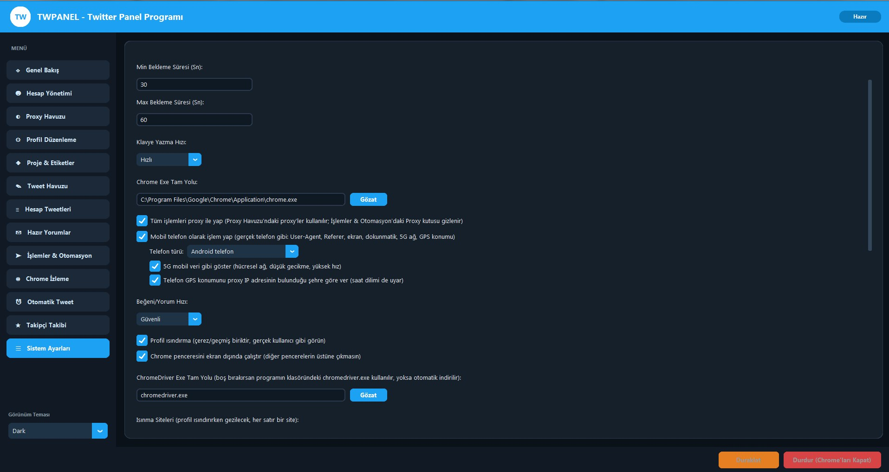
1234567891011- Min Bekleme Süresi (sn)İşlemler arası en kısa bekleme.
- Max Bekleme Süresi (sn)En uzun bekleme. Program her seferinde Min ile Max arasında rastgele bir süre bekler; yorumdan önceki bekleme de bu aralığa uyar.
- Klavye Yazma HızıYorum ve tweet yazarken tuş hızı (örnek: Hızlı).
- Chrome Exe Tam YoluÖrnek:
C:\Program Files\Google\Chrome\Application\chrome.exe. Gözat ile seçilir. - Tüm işlemleri proxy ile yapProxy Havuzu'ndaki proxy'leri kullanır; işlemler sayfasındaki Proxy kutusu gizlenir.
- Mobil telefon olarak işlem yapGerçek telefon gibi User-Agent, Referer, ekran, dokunmatik, 5G ağ ve GPS konumu kullanır.
- Telefon türü ve alt seçeneklerAndroid telefon veya iPhone; 5G mobil veri gibi göster ve GPS konumunu proxy IP'sinin şehrine göre ver (saat dilimi de uyar).
- Beğeni/Yorum HızıGüvenli en yavaş ve en güvenli seçenektir.
- Profil ısındırmaÇerez ve geçmiş biriktirerek hesabı gerçek kullanıcı gibi gösterir.
- Chrome'u ekran dışında çalıştırPencere diğer pencerelerin üstüne çıkmaz.
- ChromeDriver Exe Tam YoluBoşsa program klasöründeki dosya veya otomatik indirilen kullanılır.
Isınma siteleri ve ban koruması
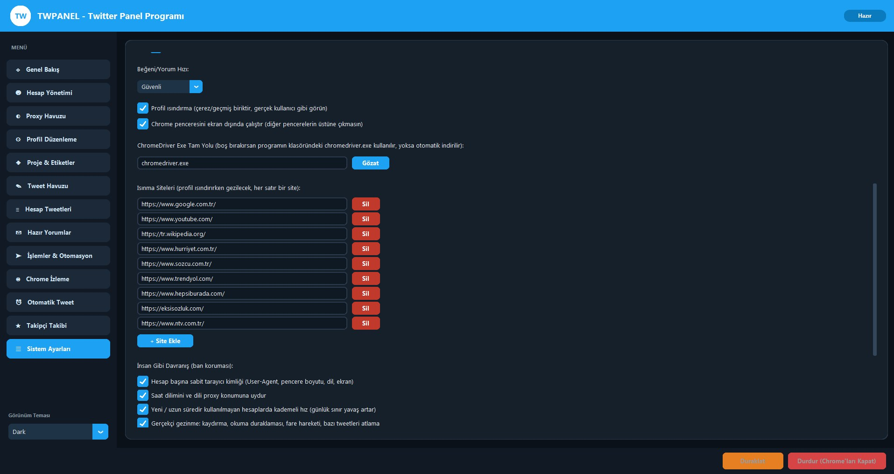
1234- Isınma SiteleriProfil ısıtılırken gezilecek siteler; her satırda bir adres (Google, YouTube, Vikipedi, Hürriyet, Sözcü, Trendyol, Hepsiburada, Ekşi Sözlük, NTV gibi).
- SilSatırdaki siteyi listeden çıkarır.
- + Site EkleYeni boş satır ekler.
- İnsan Gibi Davranış (ban koruması)Hesap başına sabit tarayıcı kimliği, saat dilimi ve dili proxy konumuna uydurma, yeni/uzun süredir kullanılmayan hesaplarda kademeli hız, gerçekçi gezinme (kaydırma, okuma duraklaması, fare hareketi).
Hızlı Başlangıç
Sıfırdan ilk işleminize kadar izlenecek 10 adım.
- Chrome ve lisansı kontrol edin. Sistem Ayarları'nda Chrome yolunun doğru olduğunu görün.
- Proxy ekleyin. Proxy Havuzu sayfasında proxy'leri ekleyip Proxy Test ile doğrulayın.
- Hesapları ekleyin. Hesap Yönetimi sayfasında hesapları yapıştırıp Süz & Ekle deyin.
- Giriş testi yapın. Seçili Hesapla Tarayıcı Aç ile hesabın giriş yaptığından emin olun.
- Profili hazırlayın (isteğe bağlı). Profil Düzenleme ile isim, biyografi ve resimleri güncelleyin.
- Proje oluşturun. Proje & Etiketler sayfasında hesapları bir projeye bağlayın.
- Tweet ve yorum hazırlayın. Tweet Havuzu ve Hazır Yorumlar sayfalarını doldurun.
- Bekleme sürelerini ayarlayın. Sistem Ayarları'nda Min/Max süreleri girin.
- İşlemi başlatın. İşlemler & Otomasyon sayfasında hesapları seçip istediğiniz düğmeye basın.
- Canlı izleyin. Genel Bakış, Chrome İzleme ve İşlem Günlüğü'nden akışı takip edin; gerekirse Duraklat veya Durdur deyin.
Güvenli Kullanım Önerileri
Hesapları uzun süre sağlıklı tutmak için pratik kurallar.
| Konu | Öneri |
|---|---|
| Proxy | Her hesaba mümkünse ayrı, kaliteli bir proxy kullanın ve önce test edin. |
| Yeni hesaplar | İlk günlerde az işlem yapın, hızı kademeli artırın. Program yeni hesaplarda zaten kademeli hız uygular. |
| Bekleme | Min/Max aralığını geniş tutun (örnek 30–60 sn). Çok kısa aralık spam gibi görünür. |
| Isınma | Profil ısındırmayı açık bırakın; hesap gerçek kullanıcı gibi çerez ve geçmiş biriktirir. |
| Cihaz | Hesap telefonla açıldıysa mobil modu açık tutun; cihaz kimliği her hesapta sabit kalır. |
| Günlük sınır | Hesap başına günlük beğeni ve yorum sınırı vardır; sayaç günlükte bugün 2/15 gibi görünür. |
| Askı | Askıya düşen hesabı hemen işaretleyin ki otomasyona alınmasın. |
Sık Sorulanlar & Sorun Giderme
Günlükte "Giriş yapıldı" yazıyor ama tarayıcıda "Giriş yap" görünüyor
Token (çerez) geçersiz olmuş veya hesap kapanmış olabilir. Chrome İzleme'den ekrana bakın, hesabı tarayıcıda açıp kontrol edin ve gerekirse yeni token ile yeniden ekleyin.
Beğeni yapılıyor ama yorum yazılmıyor
İşlemler & Otomasyon sayfasında Beğenirken hazır yorum da yaz kutusunun açık olduğunu ve Hazır Yorumlar havuzunda bulunduğunu kontrol edin. Yorum için seçilen tweet (örneğin Son tweet) de uygun olmalıdır.
Bekleme çok uzun / çok kısa
Sistem Ayarları'ndaki Min ve Max Bekleme Süresi'ni değiştirin. Süre her seferinde bu aralıktan rastgele seçilir. Kalan süre sağ üstte Bekleme göstergesinden izlenir.
Zamanlanmış tweet atılmadı
Program o saatte açık olmalıdır. Listede durum Bekliyor kalmışsa saati ve tarihi kontrol edin; geri sayım sıfırlandığında tweet atılır.
Chrome açılmıyor
Sistem Ayarları'nda Chrome Exe Tam Yolu ve ChromeDriver yolunu kontrol edin. Chrome güncellendiyse eski ChromeDriver uyumsuz olabilir; alanı boş bırakıp otomatik indirmeyi deneyin.
Hesap askıya alınmış görünüyor
Hesap Yönetimi'nde Askı Kontrolü ile doğrulayın, ardından Askıya Alındı İşaretle ile işaretleyin.
İşlemi nasıl güvenli durdururum?
Geçici bekletmek için Duraklat. Tamamen bitirmek ve açık Chrome'ları kapatmak için Durdur (Chrome'ları Kapat).
Türkçe karakterler bozuk görünüyorsa
Bu durumda programı en güncel sürümle çalıştırın. Hâlâ sorun varsa ekran görüntüsüyle destek isteyin.